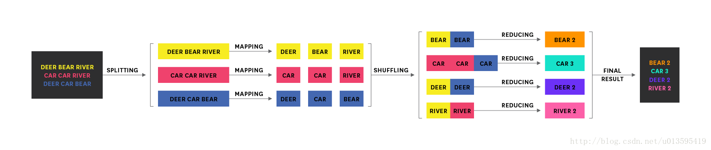

Ch05-Hadoop 之 MapReduce
March 23, 2018
Mapreduce 是一个分布式运算程序的编程框架，是用户开发“基于 hadoop 的数据分析应用”的核心框架；Mapreduce 核心功能是将用户编写的业务逻辑代码和自带默认组件整合成一个完整的分布式运算程序，并发运行在一个 hadoop 集群上
1. MapReduce 架构 #

- MapReduce 分为两个阶段：Map 映射、Reduce 归约。
- Map 阶段：对数据进行处理。
- Reduce 阶段：对 Map 结果进行汇总。
- Shuffle 过程：map 方法之后，reducer 方法之前是 Map 阶段和 Reduce 阶段的中间过程
- 不同阶段对应的 Task：
- MapTask：负责 Map 阶段的整个数据处理流程。
- ReduceTask：负责 Reduce 阶段的整个数据处理流程
- AppMaster：负责整个 MR 的过程调度及状态协调
2. MapReduce 处理流程 #
map() reduce()
Input ---> Mapper ---> Reducer ---> Output
| | |
InputFormat Shuffle OutpuFormat
| |
FileInputFormat FileOutputFormat
| |
TextInputFormat TextOutputFormat
| RecordReader | RecordReader
| | | |
new LineRecordReader new LineRecordReader